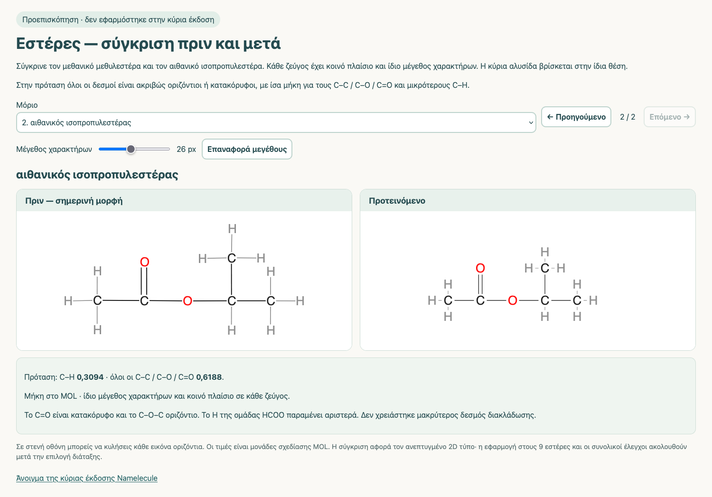

Namelecule — Συνολική αναφορά εργασιών
Από Παρασκευή 30 Οκτωβρίου, μεσημέρι, έως Κυριακή 1 Νοεμβρίου 2026
Γιάννης Σκένδρος · Κύρια έκδοση v52
Η αναφορά συγκεντρώνει την εργασία της Παρασκευής στα αλκάνια, τις χθεσινές διορθώσεις των γραμμάτων 2D και του συγκεκριμένου κύκλου ζωής JSmol, καθώς και τις επόμενες προσαρμογές έως τους εστέρες. Αντικαθιστά, για την παρούσα ενημέρωση, την αποστολή χωριστών αναφορών 30/10 και 31/10. Όπου οι καταγραφές δεν έχουν ακριβή ώρα, δεν αποδίδεται αυθαίρετη ωριαία χρονολόγηση.
Παραμένουν 141 μόρια, 14 ενεργά μαθήματα και 337 βήματα. Στο συγκεκριμένο διάστημα δεν προστέθηκαν νέες ενώσεις ή κανόνες ονοματολογίας. Τα 14 ενεργά σενάρια JSON είναι ίδια με τη βάση της Παρασκευής· οι βελτιώσεις εμφάνισης χρησιμοποιούνται μέσω του κοινού viewer.
1. Ενιαία εμφάνιση ανεπτυγμένων τύπων σε 127 μόρια
Αφετηρία ήταν η σύγκριση με τα προϋπάρχοντα MOL της εφαρμογής και η ομοιογένεια των δύο νεότερων αλκανίων, 2,3-διμεθυλοβουτανίου και 3-αιθυλο-2,5-διμεθυλοεξανίου. Ακολούθησαν ελεγχόμενες δοκιμές και επέκταση ανά χημική κατηγορία. Οι επιμέρους προσαρμογές διατηρούν τους μοριακούς γράφους και τις αντιστοιχίσεις προς το 3D.
| Κατηγορία | Ανεπτυγμένοι τύποι |
|---|---|
| Αλκάνια | 8 |
| Αλκένια | 7 |
| Αλκίνια | 8 |
| Αλκαδιένια | 8 |
| Αλκενίνια | 7 |
| Αλκοόλες | 17 |
| Αιθέρες | 11 |
| Αλδεΰδες | 17 |
| Κετόνες | 14 |
| Καρβοξυλικά οξέα | 21 |
| Εστέρες | 9 |
| Σύνολο | 127 |
Βασικές αποστάσεις σχεδίασης: C–H 0,3094 και C–C / C–O / C=O 0,6188. Για C=C/C≡C η απόσταση μεταξύ των ατόμων ακολουθεί την ίδια βασική μονάδα. Στις αλκοόλες οι O–H είναι 0,3094. Οι τιμές είναι μονάδες συντεταγμένων MOL, όχι φυσικά μήκη δεσμών σε Å.
Η αλλαγή των MOL συνδυάζεται με κοινή βαθμονόμηση γραμμάτων, λευκών περιθωρίων και αρίθμησης, επειδή η αυτόματη κλιμάκωση του σχεδιαστή δεν διατηρεί από μόνη της την επιθυμητή αναλογία στην οθόνη. Η βαθμονόμηση δεν μετακινεί αυθαίρετα τις εγγενείς θέσεις των δεσμών του SVG.
Οι αποστάσεις δεν εξισώθηκαν τυφλά όπου θα δημιουργούσαν επικάλυψη. Διατηρήθηκαν οι εγκεκριμένες οπτικά εξαιρέσεις: σύνδεσμος 0,98 στη μεγαλύτερη αλκοόλη, τρεις σύνδεσμοι 0,588 / 0,900 / 0,588 στη σύνθετη εξανο-αλδεΰδη, σύνδεσμος 0,588 στην ισοπροπυλοβουτενοδιάλη και 0,98 στην 3,4,4-τριμεθυλο-2-πεντανόνη. Οι άλλοι βασικοί δεσμοί αυτών των σχεδίων ακολουθούν την κοινή μονάδα. Πρόκειται για σχολικά διαγράμματα συνδεσιμότητας, όχι φυσικές διαμορφώσεις.
2. Ομάδες O–H, αιθέρες, καρβονύλια και εστέρες
Στις 17 αλκοόλες εμφανίζονται χωριστά O και H με ορατό δεσμό και στις 21 υδροξυλομάδες. Σε οκτώ παλαιότερα ανεπτυγμένα προστέθηκαν 11 ρητά H στο τέλος των λιστών, διατηρώντας τους προηγούμενους δείκτες ατόμων και δεσμών.
Οι 11 αιθέρες διατηρούν τις εγκεκριμένες διατάξεις των αλκυλίων. Η βαθμονόμηση περιλαμβάνει και C–O, ώστε ο διμεθυλαιθέρας, χωρίς C–C, να εμφανίζεται με την ίδια πολιτική χαρακτήρων. Διατηρήθηκαν οι μικρές αρχικές κλίσεις όπου αυτό προέβλεπε το εγκεκριμένο σχέδιο.
Στις 31 αλδεΰδες/κετόνες και στα 21 οξέα προσαρμόστηκαν οι αποστάσεις και οι εγκεκριμένες οριζόντιες/κατακόρυφες διακλαδώσεις. Στα 26 καρβοξύλια των οξέων το C=O είναι κατακόρυφο και το C–O–H οριζόντιο προς τα έξω. Οκτώ σύνθετες διατάξεις διατηρήθηκαν ακριβώς όπως εγκρίθηκαν στην προεπισκόπηση.
Στους 9 εστέρες το C=O είναι κατακόρυφο και το C–O–C οριζόντιο. Δύο παλιές διατάξεις είχαν μικρή απόκλιση από τους άξονες, έως περίπου 1,38°· διορθώθηκαν ρητά μόνο στον ανεπτυγμένο, μετά από σύγκριση πριν/μετά. Το H της ομάδας HCOO παραμένει αριστερά. Οι υπόλοιπες 2D μορφές και τα 3D αρχεία διατηρήθηκαν.
Σύγκριση σύνθετων αλδεϋδών/κετονών · Σύγκριση οξέων · Σύγκριση εστέρων

3. Διόρθωση της παραγωγής και μέτρησης γραμμάτων 2D
Η διερεύνηση ξεκίνησε από κατακόρυφο C–H στο προπένιο που άγγιζε το C. Η αστοχία αναπαράχθηκε ήδη στην εγγενή εξαγωγή SVG: οι μετρήσεις υποεκτιμούσαν την πραγματική ζωγραφισμένη επιφάνεια του γράμματος και το λευκό φόντο δεν το κάλυπτε πλήρως.
Ενσωματώθηκαν ελεγμένη τοπική διανομή JSME και κοινός μηχανισμός μέτρησης/τοποθέτησης κειμένου και λευκών περιθωρίων, με αναμονή γραμματοσειρών και ασφαλή ανανέωση. Μη αναγνώσιμες ή υπερβολικά πυκνές είσοδοι απορρίπτονται ελεγχόμενα όπου οι καταγεγραμμένοι έλεγχοι το επιβάλλουν, αντί να παραμένει παλιό μόριο στην οθόνη.
Στην επέκταση στα οξέα διορθώθηκε επιπλέον η κοινή μεταχείριση σύνθετων ετικετών OH/HO/NH₂: το λευκό υπόβαθρο υπολογίζεται για ολόκληρη την ετικέτα. Ο τετραγωνικός κανόνας των μεμονωμένων συμβόλων δεν εφαρμόζεται πλέον στα σύνθετα αυτά κείμενα.
Οπτική τεκμηρίωση 2D · Αρχικό πριν/μετά
4. Στοχευμένη διόρθωση κύκλου ζωής JSmol
Η ελεγχόμενη αναπαραγωγή έδειξε εργασίες επανασχεδίασης/resize να εκτελούνται μετά την καταστροφή του applet. Η τοπική διανομή ακυρώνει τις εκκρεμείς εργασίες που ανήκουν στο συγκεκριμένο applet και ελέγχει αν είναι ακόμη ενεργό πριν τις εκτελέσει, διατηρώντας τις άσχετες εργασίες της σελίδας.
Στις πέντε ελεγχόμενες διαδρομές, με δύο επαναλήψεις, καταγράφηκε σφάλμα σε 10/10 περιπτώσεις πριν και σε 0/10 μετά. Αυτό τεκμηριώνει τον συγκεκριμένο μηχανισμό και δεν αποτελεί γενική πιστοποίηση του 3D.
Οπτική αναφορά JSmol · Βίντεο πριν/μετά
5. Έλεγχοι και όρια της τεκμηρίωσης
- Η ενσωμάτωση γραμμάτων ελέγχθηκε αρχικά σε 422 διαθέσιμες μορφές × δύο πλάτη, δηλαδή 844 περιπτώσεις, καθώς και σε 98 καταστάσεις χειρισμών, 92 περιπτώσεις εγγενούς παραγωγού, επιλεγμένα βήματα και των 14 μαθημάτων και 18 μελλοντικές εισόδους. Η καθολική αυτή εκτέλεση προηγήθηκε των επόμενων αλλαγών ανά κατηγορία· δεν παρουσιάζεται ως ενιαία εκτέλεση της τελικής σημερινής έκδοσης.
- Οι ακόρεστοι υδρογονάνθρακες και οι αλκοόλες ελέγχθηκαν ανά ενότητα σε ονομασίες, γράφους, μήκη, ευθυγράμμιση, zoom, αρίθμηση, επισημάνσεις και σχετικά μαθήματα. Στις αλκοόλες καταγράφηκαν 179 καταστάσεις χειρισμών και 92 καταστάσεις επανάληψης των δύο μαθημάτων.
- Αιθέρες: 66 περιπτώσεις μορφών πριν και 66 μετά, 204 καταστάσεις χειρισμών, 22 πραγματικές φορτώσεις του σωστού μοντέλου, τρεις PNG και 58 καταστάσεις του υπάρχοντος μαθήματος 27 βημάτων.
- Αλδεΰδες/κετόνες/οξέα: 136 περιπτώσεις μορφών πριν και 136 μετά, 194 καταστάσεις χειρισμών και 414 έλεγχοι εγγενών δεσμών/λευκών υποβάθρων. Τα έξι σχετικά μαθήματα, 157 βημάτων συνολικά, ελέγχθηκαν σε δύο πλάτη με επιστροφή/επανάληψη/έξοδο, σε 338 καταστάσεις. Ακολούθησαν 24 πρόσθετες καταστάσεις χειροκίνητης επιλογής ανεπτυγμένου και επαναφοράς μέσα στα μαθήματα.
- Εστέρες: 54 περιπτώσεις μορφών πριν και 54 μετά, 157 καταστάσεις χειρισμών, 18 πραγματικές φορτώσεις του σωστού αρχείου 3D, 36 ενέργειες εναλλαγής και 175 έλεγχοι εγγενών δεσμών/υποβάθρων. Δύο πραγματικές εξαγωγές PNG επιθεωρήθηκαν πλήρεις.
- Στις τελικές αυτές ενότητες έγιναν συγκρίσεις 844 περιπτώσεων του πραγματικού μηχανισμού ονοματολογίας πριν/μετά, μαζί με τις επηρεαζόμενες αντιστοιχίσεις 2D/3D. Οι ανεξάρτητοι χημικοί έλεγχοι για τα 52 καρβονυλικά/όξινα και τους 9 εστέρες περιλαμβάνουν πλήρη ισομορφισμό προς τα υπάρχοντα SDF.
- Υπήρξε ανεξάρτητο review ανά ολοκληρωμένη ενότητα. Τα τελικά αντικείμενα αιθέρων, 52 τύπων και εστέρων δεν είχαν νέα ανοικτά ευρήματα. Οι browser εκτελέσεις αποδίδονται στον Developer· ο Reviewer ελέγχει ανεξάρτητα κώδικα/δεδομένα και τα παραδοθέντα τεκμήρια.
Οι αριθμοί αφορούν διαφορετικές, καταγεγραμμένες εκτελέσεις και δεν αθροίζονται ως μοναδικές λειτουργίες ή ως ποσοστό αξιοπιστίας. Τα 390 CSS px είναι προσομοίωση πλάτους, όχι φυσικό κινητό. Μία αρχική αστοχία εκκίνησης του browser δοκιμών, πριν από πλοήγηση, καταγράφηκε χωριστά· δεν παρουσιάζεται ως βλάβη ή διόρθωση της εφαρμογής.
6. Τοπική εκκίνηση, React και αποθήκευση
Το βοηθητικό Namelecule.app στην επιφάνεια εργασίας, με εικονίδιο το μόριο του λογοτύπου, εκκινεί ή επαναχρησιμοποιεί τον τοπικό server και ανοίγει την εφαρμογή στον Firefox. Μετά από επανεκκίνηση του Mac, η εκκίνηση του server αποκατέστησε την καταγεγραμμένη αδυναμία φόρτωσης αλκοόλης· δεν χρειάστηκε αλλαγή στο ακέραιο SDF. Η ακριβής αποτυχημένη αίτηση της αρχικής εικόνας δεν είχε καταγραφεί.
Η δημόσια React παραμένει στην προηγούμενη δοκιμαστική της κατάσταση, χωρίς νέο build ή συγχρονισμό με τα σημερινά MOL. Η χθεσινή απομόνωση των data52/viewer52 διατηρεί τη συμβατότητά της με την ενημερωμένη κύρια. Η τοπική εργασία React διατηρείται στο χωριστό πλήρες checkpoint· δεν παρουσιάζεται ως νέα ελεγμένη δημόσια λειτουργία.
Διατηρούνται προηγούμενα Git checkpoints, αρχικές συμπιεσμένες πηγές και σημεία επιλεκτικής επαναφοράς. Η παρούσα αποθήκευση περιλαμβάνει πλήρες checkpoint, ZIP, Git bundle και αντίγραφα στους καθιερωμένους φακέλους αποθήκευσης και «αρχεία json», μαζί με την αναφορά, τους συνδέσμους, τα 14 ενεργά JSON και το τοπικό βοηθητικό εκκίνησης. Το αντίγραφο πηγών δεν ισοδυναμεί με αυτάρκες offline πακέτο παρουσίασης.
7. Core και εκκρεμότητες
Το js/mulermoc-nom-core-52.js δεν άλλαξε στην περίοδο αυτής της αναφοράς. Η σύγκριση με τη βάση της Παρασκευής και την προηγούμενη δημοσίευση συμφωνεί. SHA256 d2138418ff630ab77e578b80ca8ba3a10cc1b877c3ab8c0e5c2735ffcd1f24a2. Οι αλλαγές αφορούν MOL/data, viewer και τις ελεγμένες τοπικές διανομές απεικόνισης· δεν εισάγουν νέους κανόνες ονοματολογίας.
- Στην εξαγωγή PNG ένα πολύ μεγάλο όνομα οξέος υπερβαίνει τον καμβά 1.200 px και κόβεται. Αναπαράχθηκε πριν/μετά, καταγράφηκε ως προϋπάρχον και χρειάζεται χωριστή διόρθωση.
- Η παλαιότερη παρατήρηση διαφορετικού κάδρου σε επανασχεδιάσεις παραμένει ανοικτή· δεν δηλώνεται γενικά λυμένη. Η ιστορική επικάλυψη στον παλιό ισοπροπυλεστέρα δεν αναπαράχθηκε ως επαφή πραγματικών pixels στην τωρινή σύγκριση, συνεπώς δεν δηλώνεται αποδεδειγμένη διόρθωση εκείνης της συγκεκριμένης παρατήρησης.
- Στον έλεγχο της δημοσίευσης καταγράφηκαν δύο προειδοποιήσεις ATOM MISMATCH από το αμετάβλητο core. Αφορούν ισοδύναμα άκρα κύριας αλυσίδας σε μία σύνθετη αλδεΰδη και στον 2,3-διμεθυλοβουτανικό ισοπροπυλεστέρα. Ο Chemistry Validator απέδειξε πλήρεις αυτομορφισμούς των SDF, μαζί με όλα τα H, που μεταφέρουν τη μία αριθμημένη αλυσίδα στην άλλη. Ο ίδιος μηχανισμός ονοματολογίας στην προηγούμενη δημοσίευση αναπαράγει τις ίδιες προειδοποιήσεις: ο διαγνωστικός έλεγχος συγκρίνει IDs ατόμων και δεν αναγνωρίζει αυτή τη συμμετρία. Δεν άλλαξε ούτε αποσιωπήθηκε εδώ· οι συγκεκριμένες προειδοποιήσεις δεν αποδεικνύουν λανθασμένη χημική αλυσίδα. Η κονσόλα δεν χαρακτηρίζεται πλήρως καθαρή.
- Το j2s του JSmol παραμένει εξάρτηση CDN. Παλαιότερες δημόσιες δοκιμές είχαν εξωτερικά μηνύματα tracker/cookies· δεν χαρακτηρίζονται καθαρή κονσόλα ούτε συγχέονται με αποδεδειγμένη χημική αστοχία.
- Δεν έχει πιστοποιηθεί συνολικά το Safari, φυσικό κινητό, η λειτουργία χωρίς Internet ή η πλήρης ακολουθία της παρουσίασης στο συνέδριο. Η πρόβα στον συγκεκριμένο υπολογιστή και το offline εφεδρικό πακέτο χρειάζονται ξεχωριστή προετοιμασία.
Η αξιοπιστία της ροής για την παρουσίαση τον Απρίλιο 2027 παραμένει κριτήριο αποδοχής. Οι ολοκληρωμένοι έλεγχοι τεκμηριώνουν τις συνθήκες που δοκιμάστηκαν και δεν αποτελούν υπόσχεση αδιάλειπτης λειτουργίας.
Στοιχεία και πηγές ελέγχων · Συνοδευτικό μήνυμα · Πλήρες checkpoint κώδικα · Αναφορά 31/10 · Αναφορά 30/10